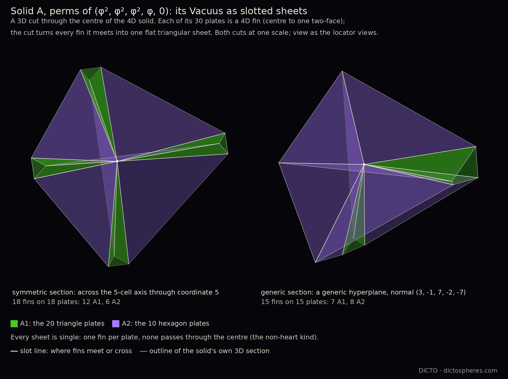
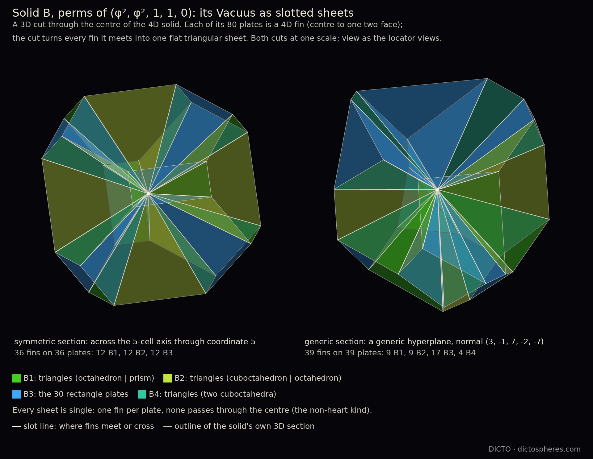

Where the silent shapes hide: the walls of the 600-cell
Abstract. Silent Running [1] found two golden solids among the corners of the 600-cell, A and B, that are silent in harmonic degrees their symmetry does not force. This paper finds where they hide. We widen DICTO's Vacuus (#87, #105) to every polytope with a centre: its plates are the hyperplanes through the centre spanned by its two-faces. It comes in three kinds: heart (centrally symmetric), inherited heart (not centrally symmetric, but some plate carries two or more faces) and non-heart (one face on every plate). The walls of the 600-cell are its 60 mirrors and its 300 cross walls, the central sections parallel to opposite pairs of its cells. Main theorem: every central plate of A and of B is a wall of the 600-cell, exactly in Q(√5); A's 30 plates are mirrors, B's 80 are 40 mirrors and 40 cross walls; ordinary orbits are not hidden. DICTO turned the story of the cat and the steak on the 600-cell ("if this is the steak, where is the cat"), and it has three answers in the 600-cell: by corners it is exactly A, −A, B, −B and an expanded 5-cell; by walls, A and B together carry all its mirrors; by solids they do not build it, and its 360 walls cut it into 4,291,200 chambers, none a named shape. One level up, the 120-cell holds ten inscribed 600-cells in two states of five, every corner in exactly two, and with them 1200 copies of A, 1200 of B and 600 of the expanded 5-cell. No copy lies in both states, yet both use the same 1560 walls, which cut the 120-cell into 593,236,800 chambers, none a copy of A or B. The fins of these copies make up the 600-cell's whole skeleton, and the 120-cell's edges but not its pentagons. Read as Vacuus, the shapes round the Queens are mostly hidden in their walls; a truncated 600-cell at μ = 1/2 + √5/5 on the line between the Queens has the whole wall system as its Vacuus; and every shadow of the Queens keeps the walls parallel to its side-on cells, joining into one lattice of possible Vacuus.
In Silent Running a submarine sits on the sea bed while the ships above listen for it. It is silent at exactly the frequencies the listeners are tuned to, and to them it passes as one more shape on the sea bed [1]. That paper explained the silence. This one asks where on the sea bed it was lying, and why nobody saw it there. The image is DICTO's, and so is the answer he gave on 16 November 2026: the silent shapes were not seen because they look like the walls of the 600-cell. The wood cannot be seen for the trees, and here the trees are in the walls.
The 600-cell is the four-dimensional solid with 120 corners, 720 edges, 1200 triangles and 600 tetrahedral cells, found by Schläfli in 1852 [3]. Its partner, the 120-cell, has 600 corners and 120 dodecahedral cells. In DICTO's books they are the Queens: the White Queen is the 600-cell and the Red Queen the 120-cell. Both are cut through the middle by many flat walls: the mirrors of their symmetry and the sections parallel to their cells. A shape made from a Queen's corners whose every flat face spans one of those walls looks, from inside the Queen, like part of the Queen's own frame.
There is an old story, as usually told of Mulla Nasruddin. A man buys meat and leaves it at home; his wife eats it and says the cat did. He weighs the cat, finds it weighs exactly what the meat weighed, and asks: if this is the steak, where is the cat? And if this is the cat, where is the steak? DICTO turned the story on the Queens. If the shapes hide in a Queen's walls, do they also make up the Queen? If the walls are the Queen's structure, which shapes does it cut out? In the White Queen the shapes weigh the same as the Queen by corners and by walls, and not by solids (§5). In the Red Queen the question opens out (§6): every corner belongs to two whole 600-cells at once, and the cats live in both. DICTO's images for this are Nansen's cat, held up by the master between two halls of quarrelling monks (Mumonkan, case 14 [19]), and Schrödinger's cat [18]: "it seems there are many half-alive cats coexisting". They are images only; no physics is claimed.
The Vacuus. In DICTO Vacuus Solids (#87) [15] a solid's Vacuus is its set of fins, one from the centre to each edge; in #105 [16] the 4D Vacuus of the permutohedron is the set of central slices that carry its two-faces. We widen the notion to any polytope X with a centre O inside it (here the centre of its corners). Its ridges are its faces one dimension below its cells: edges in three dimensions, two-faces in four. Each ridge spans, with O, one hyperplane through O: a central plate. The cone from O over a ridge is its fin. The Vacuus of X is the set of its plates, each with the ridges it carries, and a slice is X cut by one plate (Figure 1).
Three kinds (DICTO's names). X is of the heart kind when it is centrally symmetric about O; of the inherited heart kind when it is not, but some plate carries two or more ridges; and of the non-heart kind when every plate carries exactly one ridge (Figure 2).
Lemma 1. Exact. If X is centrally symmetric about a centre O inside it, every plate carries at least two ridges, a ridge f and its opposite −f.
Proof. Put O at the origin. If f is a ridge then so is −f. The plate of f is span(f), a linear subspace, so it contains −f. And f ≠ −f: f lies in a supporting hyperplane n·x = h with h > 0, since O is inside, while −f lies in n·x = −h. ∎
So heart shapes have full sheets through the centre, as in #105, where five slices of the permutohedron, each a DICTO 1:2 Truncated Octahedron, meet at its heart; non-heart shapes have only single fins. The inherited heart kind lies between: some plates carry a sheet that is not a full opposite pair.
Which shapes are of which kind. A first conjecture was that a shape is of the inherited heart kind exactly when it inherits its walls from a heart parent (every plate a wall of the parent) without the parent's central symmetry. It fails both ways. Inheriting the walls is not enough: A, −A, B and −B, every copy of them in the 120-cell (§6), and the two S5-orbit 5-cells of the 120-cell have every plate on a heart parent's walls, yet carry one face per plate. And it is not needed: the two runcitruncated 5-cells on the 120-cell's corners (its S5-orbits of 60) carry up to 10 faces on one plate while 40 of their 75 plates lie on no wall. What held in every case tested is a rule about corners, not walls: removing corners from a heart parent gives the inherited heart kind, and twisting a parent's corners into a new orbit gives the non-heart kind. The removing half is proved for the 600-cell in Proposition 8; the twisting half is checked for A, −A, B, −B, their 2400 copies and the two 5-cells. Orbits that are neither, such as the runcitruncated 5-cells, are not decided by the rule. Table 1 lists the cases.
| shape | faces | plates | faces per plate | kind | walls |
|---|---|---|---|---|---|
| 600-cell; 120-cell; inscribed 600-cell; 24-cell; snub 24-cell | 1200; 720; 1200; 96; 480 | 60; 60; 60; 12; 60 | 20; 12; 20; 8; 8 | heart | all |
| diminished 600-cells, removed set not antipodal (1; 2; 6, 12, 18 corners) | 1170 … 660 | 60 | 6 to 20 | inherited heart | all |
| diminished 600-cells, removed set antipodal (a pair; 12 corners) | 1140; 840 | 60 | 4 to 20 | heart | all |
| C3 (expanded 5-cell) | 70 | 5 | 14 | heart | all |
| A, −A, B, −B and their copies in the 120-cell | 30; 80 | 30; 80 | 1 | non-heart | all |
| the 120-cell's two S5-orbit 5-cells | 10 | 10 | 1 | non-heart | all (10 mirrors) |
| the 120-cell's two runcitruncated 5-cells | 120 | 75 | 1 to 10 | inherited heart | 35 of 75 |
| the 120-cell's bitruncated 5-cell | 40 | 20 | 2 | heart | 10 of 20 |
| the 120-cell's other S5-orbits; ordinary orbits (t = 3/2, 6/5) | 30 to 150 | = faces | 1 | non-heart | partly |

The walls. Put the 600-cell with its centre at the origin. Its mirror walls are the 60 hyperplanes of reflection of its symmetry group W(H4), of order 14400; their normals point to its corners. Its cross walls are the 300 central sections parallel to a pair of opposite tetrahedral cells; their normals point to its cell centres, which are the corners of the dual 120-cell. DICTO ruled on 16 November that cross walls also count. A shape is hidden when every one of its plates is a wall, partly hidden when some are, and not hidden when none is. For a 3D slice or shadow taken across a direction d, each edge's central plane is lifted to the hyperplane spanned by d and the edge, and is tested in the same way.
Coordinates. As in Silent Running, the 600-cell is placed in the sum-zero space of ℝ⁵, where the symmetric group S5 of the 5-cell permutes coordinates and φ = (1 + √5)/2. Solid A is the hull of the 20 permutations of (φ², φ², φ², φ, 0), and solid B the hull of the 30 permutations of (φ², φ², 1, 1, 0), each centred at its mean. Both lie on the 600-cell's corners, two of its five S5-orbits [7, 1].
Labels. Exact: proved, or decided in exact rational or Q(√5) arithmetic. Exact count: a count computed exactly and confirmed by floating-point splitting. Checked: decided exactly in each listed case, without a general proof. Quoted: a known result used from the literature and credited.
Main theorem (the silent solids are hidden in the walls). Exact, in Q(√5). Every central plate of solid A and of solid B is a wall of the 600-cell.
(i) A has 30 two-faces (20 triangles of side √2 and 10 hexagons of sides √2 and φ√2) on 30 plates, and all 30 are mirror walls.
(ii) B has 80 two-faces on 80 plates. Its 30 rectangle plates and 10 plates of √2-triangles are mirror walls; its 40 plates of φ√2-triangles are cross walls.
(iii) Ordinary S5-orbits of the same patterns are not hidden: the permutations of (φ², φ², φ², 3/2, 0) have 20 of their 30 plates in no wall, and those of (φ², φ², 6/5, 6/5, 0) have 70 of 80.
Both solids are of the non-heart kind: each plate carries exactly one two-face.
Theorem 2 (one wall system for the dual pair). Exact. The 600-cell's 1200 triangles lie on 60 plates, 20 on each, and these are its 60 mirrors. The dual 120-cell's 720 pentagons lie on the same 60 mirrors, 12 on each. The Galois twin of the 600-cell (√5 ↦ −√5) has the same 60 mirrors. The dual 120-cell adds no cross walls of its own: its cells are centred on the 600-cell's corner directions, so its cell-parallel sections are the 60 mirrors. The wall system of the dual pair is 60 mirrors + 300 cross walls = 360 walls.
Theorem 3 (the cat and the steak in the White Queen). Exact. (a) Corners: the 120 corners of the 600-cell are exactly A, −A, C3, B and −B, its five S5-orbits, where C3 is the 20 roots of A4, the corners of a uniform expanded (runcinated) 5-cell [7]. (b) Walls: the plates of A and B together are all 60 mirrors and 40 cross walls; the two share the 10 mirrors of S5. C3 adds 5 cross walls. (c) Solids: the five orbit hulls do not build the 600-cell. Each contains the centre, and together they cover 0.6504 of its volume. Their common part is a uniform bitruncated 5-cell, (23/750 + 23φ/1500) of the 600-cell; A ∩ B is a golden cantitruncated 5-cell, 0.1308 of it. The 30 cell hyperplanes of A and B cut the 600-cell into 686 regions of 23 kinds under S5.
Theorem 4 (the chambers of the White Queen). Exact count. The 360 walls cut each of the dual pair into 4,291,200 = 14400 × 298 chambers. Inside one Coxeter chamber of the mirrors lie 298 pieces, no two congruent, of 15 combinatorial types; every chamber is a pyramid from the centre over a piece of a cell. A's own 30 walls cut A into 3360 chambers, 120 of which are exactly the 600-cell's Coxeter chamber; B's own 80 walls cut B into 62,880 chambers, none of them a 600-cell chamber. No chamber of these systems is congruent to A, B or one of their cells.
Theorem 5 (the cats in the Red Queen). Exact. Let Q be the 120-cell.
(a) Q has exactly 10 inscribed 600-cells. Every corner of Q lies in exactly 2 of them. They fall into two states of 5 disjoint 600-cells, and the two 600-cells of each corner are in different states. Two from different states meet in exactly 24 corners, which form a 24-cell. Every mirror of Q swaps the two states.
(b) Q holds exactly 1200 copies of A (A and −A), 1200 copies of B (B and −B) and 600 copies of C3, all inside the inscribed 600-cells: 120, 120 and 60 in each. Under the symmetry group of Q each type is one class.
(c) No copy belongs to both states, yet the copies of each state use the same 1560 walls: Q's 60 mirrors, the 300 sections perpendicular to its corner axes, and 1200 further walls. Each inscribed 600-cell's A and B copies use all 360 of its own walls.
(d) The 1560 walls cut Q into 14400 × 41,197 = 593,236,800 chambers. Each is a cone from the centre, so none is a copy of A or B.
(e) Skeletons. The fins of all the copies cover the 600-cell's 1200 triangles and 720 edges completely; each triangle is a face of exactly one B copy and of exactly two A copies. In the 120-cell, carried outward to its surface, the fins of the A and B copies cover all 1200 edges and none of the 720 pentagons; the C3 fins complete the pentagons.
Theorem 6 (the shadows carry the walls). Checked in all eight shadows. When either Queen of the dual pair is projected to 3D along one of its four standard directions, the walls that stay flat are exactly the central planes parallel to the side-on cells of the two Queens: 45, 16, 16 and 33 walls in the corner-, edge-, face- and cell-first views of the 600-cell. The shadows of each type reach all 360 walls, and the shadows and walls form one connected lattice.
Theorem 7 (the Queens' neighbours as Vacuus). Exact. The snub 24-cell, the grand antiprism and every diminished 600-cell are hidden in the mirrors. The 24-cell inscribed in the 600-cell, the 600-cell inscribed in the 120-cell, and C3 are hidden in the cross walls only. Of the 15 uniform polytopes of H4 only the two Queens are hidden. On the line S(μ) = 600-cell ∩ μ·120-cell between the Queens (DICTO's Hopscotch line), the truncated-600-cell member at μ = 1/2 + √5/5 has the whole wall system as its Vacuus: 20 hexagons on each of the 60 mirrors and 8 triangles on each of the 300 cross walls.
Proof of Theorem 2 and the Main theorem. For every two-face of a solid we took the hyperplane through the centre that it spans, as an exact null vector in Q(√5) normalised so that its first nonzero entry is 1, and compared it with the 60 mirror normals (the 600-cell's corners) and the 300 cross-wall normals (its cell centres), also in canonical form. The 600-cell itself, built as the closure of A's corners under reflection in its own members (120 points, B's among them at the same radius), gives 60 plates, each a mirror with 20 triangles. The dual 120-cell gives the same 60 mirrors with 12 pentagons each; the Galois twin, the closure of the permutations of (σ², σ², σ², σ, 0) with σ = −1/φ, gives the same 60 again. For A and B the plates fall as in Table 2. Comparing plate directions with the 600-cell's own directions (corners, edge midpoints, triangle centres, cell centres): A's 30 plates and B's 30 rectangle and 10 √2-triangle plates are perpendicular to corners, so they are mirrors; B's 40 φ√2-triangle plates are perpendicular to cell centres, so each is a cross wall. The symmetry group of each solid, computed as every corner permutation keeping the centred Gram matrix (exact backtracking), has order 120, with no central symmetry. ∎
| kind | plates | ridge (between cells) | slice: corners, edges, faces | wall |
|---|---|---|---|---|
| A1 | 20 | triangle, side √2 (tetrahedron | golden truncated tetrahedron) | 6 = 6 + 0, 9, 5: a frustum | mirror |
| A2 | 10 | hexagon, sides √2, φ√2 (two golden truncated tetrahedra) | 10 = 6 + 4, 15, 7 | mirror |
| B1 | 20 | triangle, side φ√2 (octahedron | golden prism) | 21 = 3 + 18, 33, 14 | cross |
| B2 | 20 | triangle, side φ√2 (golden cuboctahedron | octahedron) | 21 = 3 + 18, 33, 14 | cross |
| B3 | 30 | rectangle √2 × φ√2 (golden cuboctahedron | golden prism) | 13 = 9 + 4, 24, 13 | mirror |
| B4 | 10 | triangle, side √2 (two golden cuboctahedra) | 15 = 6 + 9, 24, 11 | mirror |
| control | 65 | permutohedron, n = 5: 150 two-faces, 2 on 60 plates, 6 on 5 | heart: 5 slices are DICTO 1:2 Truncated Octahedra | — |
The B1 and B2 slices have the same counts (21 corners, 33 edges, 14 faces) but different faces: B1 has rectangles and hexagons, B2 trapezoids and heptagons (Figure 4). Each plate's ridge is a face of its own slice, and Euler's relation holds for every slice in 3D and for each solid in 4D.




Controls. Every S5-orbit has a few plates on mirrors, because the 10 mirrors of S5 are mirrors of H4 too. The ordinary orbits of the Main theorem (iii) keep only those: 10 of 30 and 10 of 80. Their other plates point along none of the 600-cell's directions. The golden twist of Silent Running [1] is what puts the rest of A's and B's plates on walls.
The chance baseline. A and B are subsets of the 600-cell's corners, and such subsets have many plates on walls by chance. In 100 random subsets each, the mean share of plates in no wall is 28% for 20 corners and 20% for 30 corners, and no sample had every plate on a wall. For 60 corners the share is 2%, and 60 of 100 samples were all-wall. So "every plate a wall" sets A and B apart from chance; for 60-point subsets the test cannot tell.
The other recent shapes. The test holds, and is distinctive, for R (the third 20-point twisted class of Silent Running, which is C3: its 70 two-faces lie on 5 plates, all cross walls), the four 30-point silence sets of the 600-cell, and the two icosahedral central cuts of the echo-shapes study: the 600-cell cut across a corner axis (42 corners, 80 triangles: 15 mirrors and 6 cross walls) and the 120-cell cut across a cell axis (the Goldberg pattern GP(2,0), after Goldberg 1937 [14]: 15 mirrors and 10 cross walls). It holds but is not distinctive for the 60-point silence sets and for DICTO's Grünbaum–Escher Triacontahedron, GET (2026), whose 60 edges lie on the 15 mirror planes of the icosahedron, as do the edges of every surface built from the triacontahedron's own rhombohedra. It fails for the two octahedral central cuts, the octahedral GP(2,0) solid and the two 240-point silence sets of the 120-cell. Off-centre cuts, GET on a non-golden star and the cube cut at 3/2 fail, as they should. All zeros were decided exactly; an independent sympy pass re-decided the 29 smaller comparisons, and all agree.
Proof of Theorem 3. (a) The five orbits are disjoint, cover the 120 corners, and are congruent to the twisted classes of Silent Running [1]; the split is Koca et al.'s [7, 8]. The hulls: A is a golden truncated 5-cell (20, 40, 30, 10), B a golden cantellated 5-cell (30, 90, 80, 20), C3 the uniform expanded 5-cell (20, 60, 70, 30) (Figure 7). (b) The plates of each hull were matched exactly against the 360 walls; A's 30 mirrors and B's 40 meet in the 10 mirrors of S5, so together they make 30 + 40 − 10 = 60, all of them. 255 cross walls are left over. (c) Volumes, intersections and hulls were computed exactly, with certified hulls in Q(√5). The hull volumes are (1 + 3φ)/40 of the 600-cell for A, (14 + 7φ)/60 for B and (3 + 5φ)/24 for C3. Each contains the centre, so they overlap and cannot tile; the union, by inclusion and exclusion over all 31 exact intersections, is 0.6504 of the 600-cell. The 90 cell hyperplanes of all five hulls cut it into 17,371 regions; the central one is the bitruncated core, the only region inside all five, and the 14,290 regions outside every hull fill 0.34959, which matches 1 − 0.6504 independently. For A and B alone, the 30 cell hyperplanes give 686 regions in 23 classes, whose volumes add up exactly to the 600-cell's. ∎

Other splits of the 600-cell are old: by corners into 24-cells (Schoute 1905, proved by Denney et al. 2019 [9]: 25 inscribed, 10 ways to take 5 disjoint) and into a 24-cell and a snub 24-cell (Gosset 1900 [4]); by solids into the snub 24-cell and 24 icosahedral pyramids (Gosset, as described by Coxeter [10, §8.4]). The grand antiprism (Conway and Guy 1965 [5]), (17/30 + φ/5) of the 600-cell, leaves a complement that splits into 20 pentagonal-antiprism pyramids and 20 edge joins (segment ∗ pentagon), a split not found in the sources checked.
Proof of Theorem 4. Every chamber of the 360 walls lies in one chamber C of the 60 mirrors, and W(H4) carries C onto its 14400 images, so the count is 14400 × (the number of regions into which the cross walls cut C). Inside C the 600-cell is the pyramid from the centre over 1/24 of one tetrahedral cell, and the dual 120-cell the pyramid over 1/120 of one dodecahedral cell; the cones are the same. 25 cross walls pass through the open chamber C. The regions were counted exactly, by Zaslavsky's sum of |Möbius| values over the flats that meet the open simplex [12], with exact nullspaces and sign tests in Q(√5); by cutting the cell piece wall by wall; and from the whole intersection lattice of the 360 hyperplanes (35,042 planes and 803,160 lines), which gives 4,291,200 = 14400 × 298. The mirrors alone give the characteristic polynomial (t − 1)(t − 11)(t − 19)(t − 29) and 14400 congruent Coxeter chambers; the 360 walls give (t − 1)(t³ − 359t² + 45959t − 2099281), with an irreducible cubic. A's 30 mirrors generate all of W(H4); in A's 5 tetrahedra, which are cells of the 600-cell, its walls cut each tetrahedron by its 6 symmetry planes into 24 orthoschemes, and the pyramid over each is the 600-cell's Coxeter chamber: 5 × 24 = 120. B's 40 cross walls, reflected in each other, leave the 360 walls, so they are no reflection system, and no chamber of B is a 600-cell chamber. ∎
So the White Queen's structure is fine-grained: the hidden shapes are not its chambers but unions of chambers whose walls happen to be its walls.
DICTO's words of 16 November: "can we conjecture any of the crossover or framing to hierarchical understanding of the 600 cells ... would the 120 cells survey help clarification of the meat/cat paradox ... it seems there are many half-alive cats coexisting". The hierarchy is the 5-cell's group S5 inside the 600-cell, and the 600-cell inside the 120-cell. Here the 600-cells are inscribed in the 120-cell, on its corners, not dual to it as in Theorem 2.
Proof of Theorem 5. (a) The 10 inscribed 600-cells are the compound of ten 600-cells in the 120-cell (Coxeter [10, Table VII]; Denney et al. [9]). Each was checked to be exactly closed under its own reflections, and every one of the 600 corners lies in exactly 2 (10 × 120 = 2 × 600). The two ways to take 5 disjoint ones are complementary halves of the 10: two whole states. Two 600-cells of one state are disjoint; two of different states share exactly 24 corners, a 24-cell, so the 25 cross pairs give 25 shared 24-cells. Controls: replacing one 600-cell by a permutohedron orbit, or repeating one, breaks the count of 2.
(b) Inside one 600-cell, the subgroups S5 that split it into A, −A, C3, B, −B are exactly the 60 generated by an A4 set of its mirror reflections, all conjugate in W(H4) (normaliser S5 × {±1}, order 240). Each gives one copy of each orbit, so a 600-cell holds 120 A copies, 120 B copies and 60 C3 copies, and an exhaustive congruence search finds no others. An exhaustive search over all of Q's corners finds no copy of A or B outside the inscribed 600-cells; 40 A copies, 60 B copies and 20 C3 copies pass through each corner of Q. The stabiliser of an A or B copy in Q's group has order 12, of a C3 copy 24, so each type is one class: 14400/12 = 1200 and 14400/24 = 600.
(c) Every plate of every copy is a wall of its own 600-cell (the Main theorem, carried by an exact similarity into each inscribed 600-cell, and checked there directly on one A and one B copy). The walls used are those of Table 3. A copy lies in one 600-cell, and the 600-cells of one state are disjoint, so no copy lies in both states; but every wall of Table 3 is used by copies of both states.
(d) As for Theorem 4, with 174 of the 1560 walls passing through the open Coxeter chamber: 41,197 regions, by the exact Zaslavsky count and by floating-point splitting (the pieces fill the simplex). Every chamber is a cone from the centre, while A and B contain the centre inside them, so no chamber is a copy. ∎
| copies | in each 600-cell | in Q | through each corner | M | X | N | walls |
|---|---|---|---|---|---|---|---|
| A, −A | 120 | 1200 | 40 | 0 | 300 | 0 | 300 |
| B, −B | 120 | 1200 | 60 | 60 | 300 | 1200 | 1560 |
| C3 | 60 | 600 | 20 | 60 | 0 | 1200 | 1260 |
| all | 300 | 3000 | 120 | 60 | 300 | 1200 | 1560 |

Half-cats. Each corner of Q belongs to two 600-cells, and in each it belongs to one of the five orbits of whichever S5 is chosen there. Fix an S5 in a 600-cell of the first state. Of its 5 shared 24-cells, one with each 600-cell of the second state, one is split 0 A, 12 C3, 12 B and the other four 10 A, 2 C3, 12 B. So every shared 24-cell is exactly half B in each of its two 600-cells, whatever S5 is chosen. Over all pairs of choices (25 × 60 × 60 = 90,000 cases) the corners of a shared 24-cell fall into 18 patterns of (orbit in the first state, orbit in the second); at least 4 corners are B in both, and in 1 choice in 60 every corner has the same orbit in both. Copies from different states share at most 6 corners, but always share walls: two A copies at least 2, an A and a B copy at least 1, two B copies at least 5 and up to 20. This is the sense of DICTO's image: corners belong to two wholes at once, and every cat is whole in one state and present only in part in the other.
The Queens' skeletons. DICTO proposed that the Vacuus fins may form the Queens' skeletons. Coverage was computed exactly, as the share of each face (or edge) inside the union of fins, in two readings: the finite fin, cut off at its face, and the radial fin, the same cone carried outward to the Queen's surface. In the 600-cell the fins of all copies cover every triangle and every edge whole, in both readings. More is true: each A copy has 20 of the 600-cell's triangles as faces (its 5 tetrahedral cells are 600-cell cells) and each B copy 10, and W(H4) is transitive on triangles, so every triangle is a face of exactly 2 A copies (120 × 20/1200) and of exactly 1 B copy (120 × 10/1200). The 120 B copies split the 1200 triangles between them exactly. In the 120-cell no copy reaches the surface in the finite reading, since every copy lies inside an inscribed 600-cell whose faces are chords of Q. In the radial reading the A and B fins cover all 1200 edges and none of the 720 pentagons; the C3 fins, 10 per pentagon, complete them. Controls: each Queen's own fins cover its skeleton; the fins of non-golden orbits (t = 3/2, 6/5) with C3 cover only 0.0615 of the triangles and 0.2412 of the edges. Neither Queen's own Vacuus equals the union of the inner shapes' fins: the union is larger (of the five orbits' 290 fins in the 600-cell, 150 lie on cross walls).
So one level up the cat and the steak again weigh the same by corners and by walls, and again not by solids: 593,236,800 chambers and not one cat.
DICTO's observation of 16 November: "all of the shadows seem to carry interconnected lattices of possible vacuus". When a Queen is projected to 3D along a direction d, a wall with normal n stays flat in the shadow, as a plane through its centre, exactly when n·d = 0, and a projected point lies on that plane exactly when n·x = 0. A shape in the shadow whose edge fins from the shadow's centre all lie in kept walls is a possible Vacuus. Every test is one exact dot product in Q(√5). The 120-cell is built as the exact dual of the 600-cell, so the views pair up: the 600-cell's corner-, edge-, face- and cell-first views are the 120-cell's cell-, pentagon-, edge- and corner-first views.
| view (600-cell / 120-cell) | mirrors | cross | total | possible Vacuus seen (examples) |
|---|---|---|---|---|
| corner-first / cell-first | 15 | 30 | 45 | icosahedra and the dodecahedron (600-cell, 30/30 mirror); dodecahedra and a truncated icosahedron (120-cell, 30 mirror + 60 cross) |
| edge-first / pentagon-first | 6 | 10 | 16 | flat pentagons |
| face-first / edge-first | 4 | 12 | 16 | flat triangles and hexagons |
| cell-first / corner-first | 6 | 27 | 33 | regular tetrahedra (6/6 mirror); the octahedron (12/12 cross) |
Proof of Theorem 6 (as checked). In each of the eight shadows the kept walls were listed exactly and compared with the side-on cells, the cells seen edge-on as flat faces of the shadow's hull. The 600-cell's side-on tetrahedra (60, 20, 24 and 54 hull faces) give the cross walls; the 120-cell's side-on dodecahedra (30, 12, 8 and 12 non-pentagon hull faces) give the mirrors. So each Queen shows one family of walls on its own surface and the other on its partner's. Each mirror contains 15, 36, 40 and 30 view directions of the four types, and each cross wall 6, 12, 24 and 27, so the shadows of any one type reach all 360 walls. Join two shadows when they share a wall: the graph is connected for each type and for all together, and so is the graph of walls. A view strictly inside one of #63's six turnings between standard views keeps only the walls common to both ends (5 mirrors on the corner–edge turning, 3 mirrors and 6 cross walls on the corner–cell and face–cell turnings, 2 + 2 on the others). ∎ Controls: a generic direction keeps no wall; a direction inside one mirror keeps one; turned by a generic exact rotation about d, the icosahedra and dodecahedron drop from 30/30 to 0/30.


So the view moves through one wall system, seen through many windows. The icosidodecahedron of the 600-cell's corner-first view is not a possible Vacuus: its fins lie in the six decagon planes, which are not walls.
DICTO's proposal of 16 November: "anybody's shape found in the vicinity of the queens shape needs to be reevaluated as a vacuus". If the Vacuus is accepted as a reading, everyone's earlier discoveries take part in it. The shapes below are their finders'; the Vacuus reading of each is new here. Each shape's plates were matched exactly against the 360 walls (M / C / N = mirror walls / cross walls / no wall). Controls: the 600-cell with every corner moved by an exact rational step of at most 0.04 gives 1200 plates on no wall, and the 600-cell turned by a generic exact rotation gives 60 plates on no wall.
| shape | finder | 2-faces | plates | kind | M / C / N | verdict |
|---|---|---|---|---|---|---|
| snub 24-cell = 600-cell less an inscribed 24-cell | Gosset 1900 [4] | 480 | 60 (8 each) | heart | 60 / 0 / 0 | hidden |
| grand antiprism = 600-cell less two orthogonal decagons | Conway and Guy 1965 [5] | 720 | 60 (12 each) | heart | 60 / 0 / 0 | hidden |
| diminished 600-cells (314,248,344) | Dutour Sikirić and Myrvold 2008 [6] | 480 to 1170 | 60 | inherited heart; heart if the removed set is antipodal | 60 / 0 / 0 | hidden (Proposition 8) |
| 24-cell inscribed in the 600-cell | Schoute 1905, as in [9] | 96 | 12 (8 each) | heart | 0 / 12 / 0 | hidden, cross walls only |
| 600-cell inscribed in the 120-cell | Coxeter's compound [10] | 1200 | 60 | heart | 0 / 60 / 0 | hidden, cross walls only |
| expanded 5-cell C3 (the A4 roots) | classical; orbit listed by Koca et al. 2006 [7] | 70 | 5 (14 each) | heart | 0 / 5 / 0 | hidden, cross walls only |
| solids A and B | orbits: Koca et al. 2006 [7]; solids: DICTO 2026 [1] | 30; 80 | 30; 80 | non-heart | 30 / 0 / 0; 40 / 40 / 0 | hidden |
Proposition 8 (the diminished 600-cells). Exact. Every diminished 600-cell, the 600-cell with an independent set of k corners removed (Dutour Sikirić and Myrvold count 314,248,344 such sets [6]), is hidden in the 60 mirrors. It is of the heart kind when the removed set is antipodal and of the inherited heart kind otherwise.
Proof. Removing the set leaves the tetrahedra that survive and, for each removed corner, the icosahedron of its 12 neighbours. Every triangle of either kind is a triangle of the 600-cell, so every two-face lies on one of the 60 mirrors (Theorem 2). Each corner lies in 30 triangles and no triangle has two removed corners, so 1200 − 30k triangles remain. Each kept corner has at most 3 removed neighbours, since its neighbours form an icosahedron, in which no 4 corners are pairwise non-adjacent; counting the edges between removed and kept corners, 12k ≤ 3(120 − k), so k ≤ 24, and at least 480 triangles lie on the 60 mirrors: some mirror carries two or more. The shape is centrally symmetric exactly when the removed set is. ∎ Twelve cases (1, 2, 6, 12 and 18 corners removed, and an antipodal pair) were also checked directly.
The uniform family. The 15 uniform polytopes of H4 come from Wythoff's construction; the sources checked do not credit each member separately (Schläfli [3]; Gosset [4] for the rectified 600-cell; Conway and Guy's complete list [5], proved complete by Möller [13]). Only the two Queens are hidden. The rectified, truncated and bitruncated members have 60 mirror plates and 1200 plates on no wall; the cantellated and cantitruncated members 60 mirrors and 3720 or 4200 on no wall; the runcinated, runcitruncated and omnitruncated members no plate on any wall. All 15 are of the heart kind, and no uniform member has a two-face on a cross wall. The mirror faces follow #107's Mirror Law [17], reproduced here for every face type.
Proposition 9 (the cross-wall law). Exact. In the Wythoff polytope of a seed x with weights λi, a two-face of type J (two nodes) spans the plate span(x, αJ). A wall with normal w contains it exactly when w ⟂ αJ and Σringed i λi(w·ωi) = 0, with ωi the fundamental weights. Mirror normals are roots, with coefficients of one sign, which gives #107's Mirror Law. Cross-wall normals have mixed signs, so they give stations, seeds at which a face type off the mirrors lands on cross walls. Only the face type {2, 3} has stations: in the truncated 600-cell family at λ3 : λ4 = 1/φ, in the cantellated 600-cell family at λ2 : λ4 = √5 − 2, and along one-parameter families in the runcitruncated, cantitruncated 600-cell and omnitruncated families. No uniform seed sits at a station.
Proof of the station in Theorem 7. DICTO's Hopscotch line passes the truncated-600-cell station at μ = 1/2 + √5/5 ≈ 0.947214. There each corner sits on an edge of the 600-cell at the fraction 1/2 − √5/10 = 1/(1 + φ²) from the nearer corner; the edges come in two lengths in the ratio φ, and the hexagons are golden. Its 1440 corners, 720 cells, 2400 triangles and 1200 hexagons were built and checked exactly; the hexagons fall 20 on each mirror and the triangles 8 on each cross wall, and no plate lies elsewhere. ∎ The station is not the line's 19-design point (μ ≈ 0.924139), its canonical-form point (≈ 0.921450) or its turn (≈ 0.925615); away from it, S(μ) has 60 mirror plates and 1200 on no wall. The station shape was not found in the sources checked.
Maximal subgroups and atlases. Every full-dimensional hull of an orbit of one of Koca et al.'s five maximal subgroups of W(H4) [7] on the 600-cell's corners is hidden, except the 12- and 20-corner duopyramids; every generic orbit has no plate on any wall. In DICTO's White Queen atlas (#63, 62 slice types) and Red Queen atlas (124), most slices are partly hidden; the fully hidden ones are the 600-cell's corner-first slices with 32 and 12 corners and its cell-first tip tetrahedron, and the 120-cell's corner-first slices with 60 corners (15 M + 30 C) and 20 corners, and two cell-first tetrahedra.
From the studies of 16 November 2026 (each lists its URLs): Wikipedia, Uniform 4-polytope (history: Schläfli 1852, Gosset 1900, Boole Stott 1910, Schoute 1911, Elte 1912, Coxeter 1940, Conway–Guy 1965, Möller 2004), 600-cell (snub 24-cell as a diminished 600-cell; 25 inscribed 24-cells; the grand antiprism, citing Dechant 2021), 120-cell (225 24-cells, 25 disjoint; ten 600-cells, two splits into five; 12 rings of 10; 120 5-cells) and Cantellated 600-cell, read 16 November 2026. Dutour Sikirić–Myrvold [6]: abstract and search snippets (PDF returned HTTP 503). Koca et al. 2006 [7]: the library copy, read in full for the subgroups and orbit decompositions. Koca, Koca, Al-Ajmi 2012 [8], §4.1. Denney et al. [9], Facts 2 and 5 and §3; their account of the 10 inscribed 600-cells and the 24-cell meetings agrees with Theorem 5 (a). Coxeter [10] (1948 edition, §§8.2–8.8, §§13.4–13.7, Tables V–VII): Gosset's construction of the 600-cell from the snub 24-cell and 24 icosahedral pyramids, the 25 inscribed 24-cells, sections, facetings and compounds, among them ten 600-cells in the 120-cell (10 × 120 = 2 × 600); nothing on Vacuus readings, cross walls, golden copies or chambers. Library item searched for a dissection of the grand antiprism's complement (Koca, Al-Ajmi, Koca 2009, arXiv:0906.2117): none found. Listed but not read in full: Koca, Al-Ajmi and Koca 2009 and 2011 on the snub 24-cell. Not opened: Conway–Guy 1965; Sadoc–Mosseri, Geometrical Frustration (1999); Elser–Sloane 1987. Web searches: "diminished 600-cell number of diminishings"; "Beiträge zur Algebra und Geometrie 2008 49 diminished 600-cell independent sets Myrvold". DICTO's own work: #63, the Red Queen atlas, #87, #105, #107, the Hopscotch line study, and the studies named in the meta line. None of these sources reads any of the shapes as a Vacuus, uses cross walls, counts golden copies in the 120-cell, or counts the chambers of the 360 or 1560 walls.